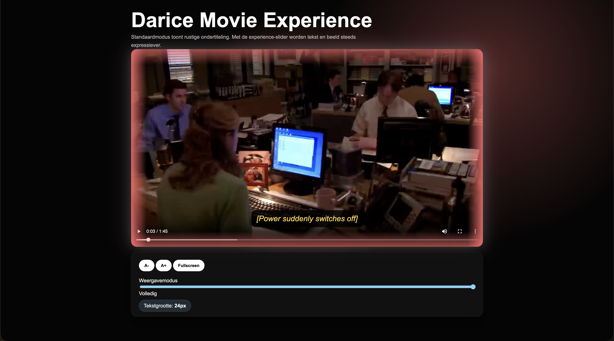
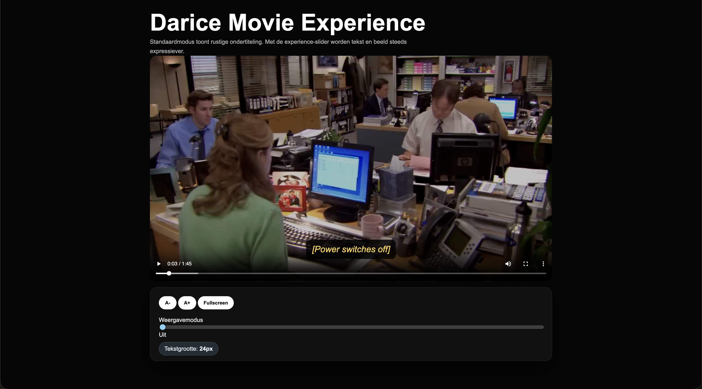

01
user tested
HCD Video Experience
A video player made for a deaf user. I focused on making sound more visible through subtitles, movement, colour and visual feedback.
Favourite part: turning sound into something visual instead of only adding plain subtitles.
Live site